Отношения и функции#
- В отношениях главное - уважение и интеграл.
- Какой ещё интеграл?
- Ну, я не очень разбираюсь в отношениях.
Декартово произведение#
Чтобы установить отношение между двумя множествами, вводят вспомогательное множество, включающее в себя всевозможные упорядоченные пары элементов двух множеств. Множество всех таких упорядоченных пар, в которых первый элемент принадлежит множеству \(A\), а второй - множеству \(B\), называется декартовым произведением \(A \times B\). По определению,
\(A \times B = \{(x, y) \colon x \in A, \; y \in B \}\)
По существу, в декартово произведение множеств входят все кортежи, в которых первый элемент берется из первого, а второй - из второго множества.
Пример. Пусть \(A = \{\text{чай}, \text{кофе}, \text{какао}\}\) - множество напитков, \(B = \{\text{карамель}, \text{тархун}\}\) - множество наполнителей. Тогда \(A \times B\) составляет множество всех вариантов напитков с каким-нибудь одним наполнителем:
\(A \times B = \{(\text{чай}, \text{карамель}), (\text{чай}, \text{тархун}), (\text{кофе}, \text{карамель}), (\text{кофе}, \text{тархун}), (\text{какао}, \text{карамель}), (\text{какао}, \text{тархун})\}\)
Строго говоря, \((\text{чай}, \text{карамель})\) и \((\text{карамель}, \text{чай})\) - это две разные упорядоченные пары. (Налить карамельный сироп в чай и чайный сироп в карамель - не одно и то же.)
Поэтому в общем случае \(A \times B \neq B \times A\). При \(A = B\) имеем декартов квадрат \(A \times A\).
Пример. Множество населенных пунктов Приморья образует множество \(M\). Например, \(M = \{\text{Владивосток}, \text{Находка}, \text{Уссурийск}, \text{Артём}, \text{Арсеньев}, \text{Смоляниново}, \text{Шкотово}, \text{Пограничный}, \text{Партизанск}, \text{Фокино} \}\). Множество \(M \times M\) - это все клетки квадратной таблицы. Каждая клетка указывает, из какого населенного пункта в какой населенный пункт следует автобус.
Бинарные отношения#
Источник: Дехтярь и др. - Лекции по дискретной математике
Выделим в множестве \(M \times M\) из предыдущего примера произвольное подмножество \(R \subset M \times M\). Например, по признаку \(R(x, y) = \) “существует дорога, соединяющая населенные пункты \(x\) и \(y\)”.
Всякий двухместный предикат на множестве \(M\) выделяет на этом множестве бинарное отношение. По определению, бинарное отношение на множестве \(M\) - это подмножество декартова квадрата \(M \times M\).
Пусть \(R\) - отношение. Следующие две записи означают одно и то же:
\( (x, y) \in R \quad \text{и} \quad xRy \)
Пример. Пусть \(A\) - произвольное множество. Отношение \(\mathrm{id}_A = \{(x, x) \colon x \in A\}\) называется тождественным отношением, оно обычно обозначается знаком \(=\).
Рассматривается более общий случай, чем отношения на одном множестве - это так называемые соответствия, т.е. подмножества декартова произведения \(A \times B\).
С соответствием \(R\) связаны его область определения \(\mathrm{dom}\, R\) и область значений \(\mathrm{rng}\,R\):
\({\mathrm {dom}}\, R = \{x \colon \exists y\, ( xRy ) \}\)
\({\mathrm {rng}}\, R = \{y \colon \exists x\, ( xRy ) \}\)
Обратным соответствием для соответствия \(R\) называется множество пар
\(R^{-1} = \{(x, y) \colon yRx\}\)
Образом множества \(X\) относительно соответствия \(R\) называется множество
\(R(X) = \{y \colon \exists x \in X\, (xRy) \}\)
Прообразом \(Y\) относительно \(R\) называется множество \(R^{-1}(Y)\).
Пример. Пусть \(A\) - множество мужчин, \(B\) - множество женщин. Зададим соответствие \(R \subset A \times B\): пусть мужчине \(x\) соответствует женщина \(y\) (пишем \(xRy\)), если \(x\) состоит или состоял с \(y\) в браке.
Тогда \(\mathrm{dom}\, R\) - это все мужчины, которые когда-либо были женаты, \(\mathrm{rng}\, R\) - это все женщины, которые когда-либо были замужем. Пусть \(X\) - множество мужчин, проживающих во Владивостоке. Тогда \(R(X)\) - это множество всех их жён и бывших жён (не обязательно проживающих во Владивостоке). Если \(Y\) - множество женщин, проживающих во Владивостоке, то \(R^{-1}(Y)\) - это множество всех их мужей и бывших мужей (также не обязательно проживающих во Владивостоке). Наконец, отношение \(R\) означает “быть мужем”, тогда обратное отношение \(R^{-1} \subset B \times A\) означает “быть женой”.
Из этого примера видно, что один и тот же элемент множества \(A\) может быть связан отношением как с одним элементом множества \(B\), так и с несколькими, а может быть не связан ни с одним элементом.
Пример. Пусть \(A\) - множество людей, \(B\) - множество населенных пунктов. Определим соответствие \(R \subset A \times B\): пусть \(xRy\), если человек \(x\) когда-либо посещал населенный пункт \(y\). Если \(X\) - множество студентов ВВГУ, то \(R(X)\) - это все населенные пункты, в которых побывали студенты. Если \(Y\) - множество населённых пунктов Китая, то \(R^{-1}(Y)\) - это множество студентов ВВГУ, которые были в Китае. Для всего отношения \(R\) выполнено \(\mathrm{dom}\,R = A\) и \(\mathrm{rng}\,R = B\).
Упражнение. Придумайте свой пример соответствия между двумя множествами \(A\) и \(B\). Опишите область определения, область значений, обратное соответствие. Задайте любое подмножество \(X \subset A\), опишите его образ. Задайте любое подмножество \(Y \subset B\), опишите его прообраз.
Представление бинарных отношений#
Источник: Вялый и др. - Лекции по дискретной математике
Граф#
Пример. Рассмотрим соответствие между студентами \(A = \{\text{Маша}, \text{Джон}, \text{Алина}\}\) и задачами \(B = \{1, 2, 3, 4, 5\}\): для \(x \in A\) и \(y \in B\) верно \(xRy\), если студент \(x\) решил задачу \(y\).
Информация о студентах, решивших задачи, представляется в виде двудольного графа.
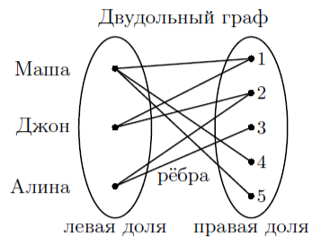
Вместо линий можно рисовать стрелки слева направо, обозначающие все пары \((x, y)\), связанные отношением \(R\), т.е. \((x, y) \in R\).
Укажем на рисунке область определения \(\mathrm{dom}\,R\) и область значений \(\mathrm{rng}\,R\). Область определения - это все студенты, решившие хотя бы одну задачу. Область значений - это все задачи, решенные хотя бы одним студентом.
Чтобы изобразить граф обратного отношения \(R^{-1}\), достаточно перерисовать все стрелки в обратную сторону.
Пример. На множестве городов \(M\) зададим отношение \(R\), обозначающее возможность проехать из города \(x\) в город \(y\) по дороге, не проезжая мимо одного из других городов из множества \(M\).
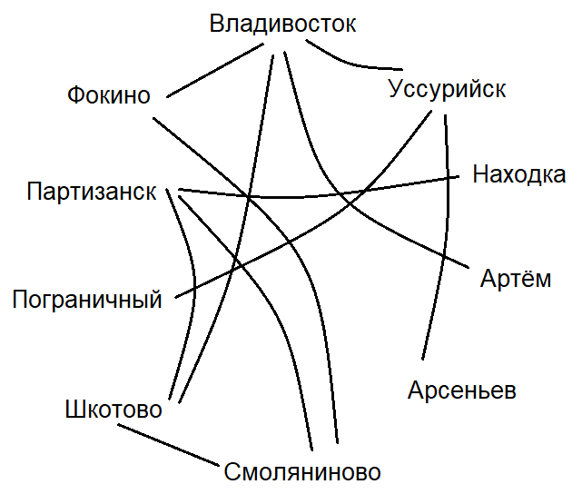
Булева матрица#
Чтобы ввести отношение, изображенное на рисунке, в компьютерную программу, удобно представить его в виде булевой матрицы.
1 |
2 |
3 |
4 |
5 |
|
|---|---|---|---|---|---|
Маша |
1 |
0 |
0 |
1 |
1 |
Джон |
1 |
1 |
0 |
0 |
0 |
Алина |
0 |
1 |
1 |
0 |
0 |
Скажем, как определить по матрице область определения и область значений отношения.
Область определения - это все строчки, в которых есть хотя бы одна единица. Область значений - это все столбцы, в которых есть хотя бы одна единица.
Матрица обратного отношения \(R^{-1}\) получается транспонированием исходной матрицы.
Маша |
Джон |
Алина |
|
|---|---|---|---|
1 |
1 |
1 |
0 |
2 |
0 |
1 |
1 |
3 |
0 |
0 |
1 |
4 |
1 |
0 |
0 |
5 |
1 |
0 |
0 |
Пример. Отношение между городами представляется в виде следующей булевой матрицы.
Вл |
Нах |
Усс |
Арт |
Арс |
См |
Шк |
Пог |
Пар |
Фок |
|
|---|---|---|---|---|---|---|---|---|---|---|
Владивосток |
1 |
0 |
1 |
1 |
0 |
0 |
1 |
0 |
0 |
1 |
Находка |
0 |
1 |
0 |
0 |
0 |
0 |
0 |
0 |
1 |
0 |
Уссурийск |
1 |
0 |
1 |
0 |
1 |
0 |
0 |
0 |
0 |
0 |
Артем |
1 |
0 |
0 |
1 |
0 |
0 |
0 |
0 |
0 |
0 |
Арсеньев |
0 |
0 |
1 |
0 |
1 |
0 |
0 |
0 |
0 |
0 |
Смоляниново |
0 |
0 |
0 |
0 |
0 |
1 |
1 |
0 |
1 |
1 |
Шкотово |
1 |
0 |
0 |
0 |
0 |
1 |
1 |
0 |
1 |
0 |
Пограничный |
0 |
0 |
1 |
0 |
0 |
0 |
0 |
1 |
0 |
0 |
Партизанск |
0 |
1 |
0 |
0 |
0 |
1 |
1 |
0 |
1 |
0 |
Фокино |
1 |
0 |
0 |
0 |
0 |
1 |
0 |
0 |
0 |
1 |
Строго говоря, если на главной диагонали у нас стоят единицы, то и в каждой вершине графа должна быть петля.
Перечисление пар#
Любое бинарное отношение - это множество, а конечное множество можно задать перечислением его элементов.
В нашем примере отношение \(R\) содержит следующие кортежи (упорядоченные пары):
\((\text{Маша}, 1), (\text{Маша}, 4), (\text{Маша}, 5)\)
\((\text{Джон}, 1), (\text{Джон}, 2), (\text{Алина}, 2), (\text{Алина}, 3)\)
В реляционных базах данных информация (о мире) хранится в виде отношений. Например, понятие “место жительства” рассматривается как отношение между множеством людей и множеством жилых помещений и т.д.
Пример. Если за решение каждой задачи студенту ставится оценка от \(1\) до \(5\), то такая информация представляется в виде тернарного отношения \(T \subset A \times B \times C\), задаваемого также тернарным предикатом \(T(x, y, z)\). Тройка \((x, y, z)\) включается в множество \(T\), если студент \(x\) решил задачу \(y\) на оценку \(z\).
Замечание. Если каждый студент \(x\) получает за решение задачи \(y\) ровно \(z\) баллов либо \(0\) баллов, когда задача не решена, то существует функция двух переменных \(z = f(x, y)\) - соответствие, которое каждой паре \((x, y) \in A \times B\) указывает единственный элемент \(z \in C \cup \{0\}\).
Запишем на языке логики предикатов упомянутое свойство:
\(\forall x \in A,\, y \in B \, \exists ! z \in C \cup \{0\} \colon (x, y, z) \in T\)
Замечание. Квантор существования и единственности \(\exists !\) выражается на чистой логике предикатов так:
\(\exists ! x \colon P(x) \; \Leftrightarrow \; \exists x \,P(x) \land \forall x_1\, \forall x_2\, (P(x_1) \land P(x_2) \to (x_1 = x_2))\)
Просто “единственность” (“существует не более одного…”) в математике не предполагает существование, поэтому квантор \(\exists !\) выражается в виде конъюнкции свойства существования и свойства единственности.
Свойства соответствий#
Источник: Кузнецов - Дискретная математика для инженера
Пусть \(R \subset A \times B\) - соответствие.
Если \(\mathrm{dom}\,R = A\), то соответствие называется всюду определенным.
Если \(\mathrm{rng}\,R = B\), то соответствие называется сюръективным (от французского “сюр” - предлог “на”; отношение накрывает всё множество \(B\)).
Запишем данные свойства на языке логики предикатов.
\(\mathrm{dom}\,R = A \quad \Longleftrightarrow \quad \forall x \in A\, \exists y \in B \colon (xRy)\)
\(\mathrm{rng}\,R = B \quad \Longleftrightarrow \quad \forall y \in B\, \exists x \in A \colon (xRy)\)
Соответствие \(R\) называется инъективным, если прообразом любого элемента из \(\mathrm{rng} \, R\) является единственный элемент из \(\mathrm{dom} \, R\).
Соответствие \(R\) называется функциональным (однозначным), если образом любого элемента из \(\mathrm{dom} \, R\) является единственный элемент из \(\mathrm{rng} \, R\).
Свойство инъективности выражается на языке логики предикатов так:
\(\forall y \in B \colon \forall x_1, x_2 \in A \colon (x_1Ry \land x_2Ry \to x_1 = x_2)\)
Свойство функциональности выражается на языке логики предикатов так:
\(\forall x \in A \colon \forall y_1, y_2 \in B \colon (xRy_1 \land xRy_2 \to y_1 = y_2)\)
Соответствие между \(A\) и \(B\) называется взаимно однозначным (биекцией, или “1-1-соответствием”), если оно всюду определено, сюръективно, функционально и инъективно.
Пример. Выведем отрицание свойства сюръективности с помощью законов логики предикатов.
\(R \text{ - не сюръективно} \quad \Longleftrightarrow \quad \neg \forall y \in B\, \exists x \in A \colon (xRy) \;\; \Leftrightarrow\)
\(\Leftrightarrow \;\; \exists y \in B \, \neg \exists x\in A \colon (xRy) \;\; \Leftrightarrow \;\; \exists y \in B \, \forall x\in A \colon \neg (xRy)\)
Итак, “не сюръективность” означает, что найдется элемент \(y \in B\), которому не соответствует ни один элемент \(x \in A\).
Упражнение. Запишите отрицание свойства инъективности соответствия \(R \subset A \times B\).
Иллюстрация свойств на графе соответствия#
Всюду определенность: из каждого элемента множества \(A\) (области отправления соответствия) выходит хотя бы одна стрелка.
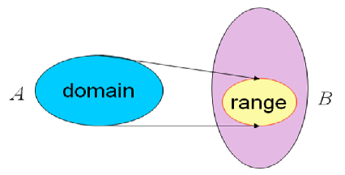
Сюръективность: в каждый элемент множества \(B\) (области прибытия соответствия) входит хотя бы одна стрелка.
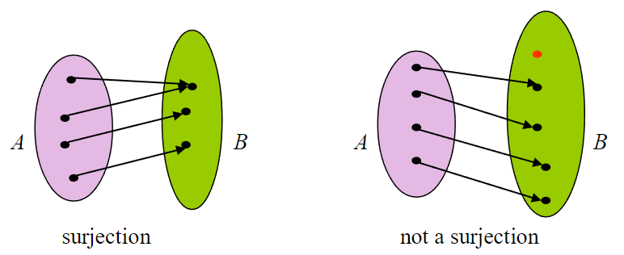
Инъективность: в каждый элемент области значений \(\mathrm{rng}\, R\) входит ровно одна стрелка. Следовательно, в каждый элемент области прибытия входит не более одной стрелки.
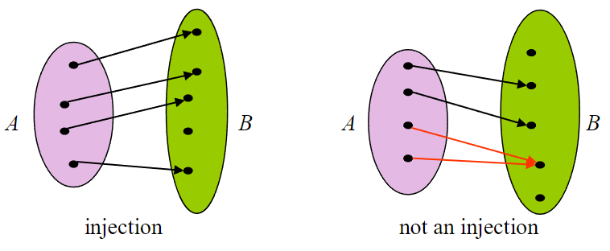
Взаимная однозначность: из каждого элемента множества \(A\) выходит ровно одна стрелка, и в каждый элемент множества \(B\) входит ровно одна стрелка.
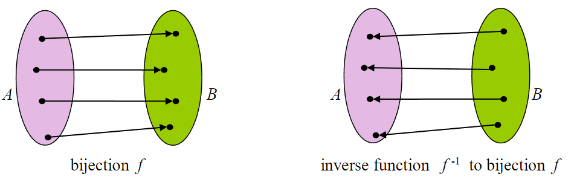
Замечание. Взаимно однозначное соответствие \(R\) между \(x \in A\) и \(y \in B\) задает функцию \(f \colon A \to B\), определенную всюду на множестве \(A\) и имеющую обратную \(f^{-1} \colon B \to A\), всюду определенную на \(B\).
Иллюстрация свойств на матрице соответствия#
Строчки соответствуют элементам области отправления \(A\), столбцы соответствуют элементам области прибытия \(B\).
Всюду определенность: в каждой строчке матрицы соответствия есть хотя бы одна единица.
Сюръективность: в каждом столбце есть хотя бы одна единица.
Инъективность: в каждом столбце есть не более одной единицы.
Функциональность: в каждой строчке есть не более одной единицы.
Взаимная однозначность: в каждой строчке ровно одна единица, и в каждом столбце ровно одна единица.
Замечание. Взаимная однозначность соответствия \(R \subset A \times B\) возможна только при равномощности множеств \(A\) и \(B\), т.е. \(|A| = |B|\).
Примеры#
Пример 1. Рассмотрим соответствие между местами в зрительном зале (множество \(A\)) и билетами (множество \(B\)).
Всюду определенность: все места заняты.
Сюръективность: все билеты проданы.
Инъективность: каждому билету соответствует не более одного места в зале.
Функциональность: каждому месту соответствует не более одного билета.
Замечание. Если \(|A| = |B|\) и \(R\) - сюръективно, то \(R\) - взаимно однозначно. (См. теорему о существовании и единственности представления булевой функции в виде многочлена Жегалкина.)
Пример 2. Разнесет весна тополиный пух,
Словно сто снегов, и окажется,
Если ты одна любишь сразу двух,
Значит, это не любовь, а только кажется.
Пусть \(A\) - множество женщин, \(B\) - множество мужчин, соответствие \(R\) установлено так: \(xRy\), если женщина \(x\) любит мужчину \(y\).
В песне поется про соответствие, не обладающее свойством функциональности. В матрице такого соответствия в одной строчке может находиться более одной единицы.
Пример 3. Рассмотрим числовую функцию \(f(x) = |x| + x\). График функции представляет собой соответствие \(G \subset \mathbb R \times \mathbb R\) - множество точек на плоскости \(\mathbb R^2\).
Это соответствие всюду определено и функционально, так как всякая вертикальная прямая пересекает график ровно в одной точке.
Соответствие \(G\) не сюръективно, так как не любая горизонтальная прямая пересекает график функции \(f\).
Соответствие \(G\) не инъективно, так как некоторые горизонтальные прямые пересекают график более чем в одной точке.
Упражнение. Исследуйте функции \(g(x) = |x|\) и \(h(x) = x^3 + 6\) на свойства сюръективности, инъективности, биективности.
Функции#
Источник: Палий - Дискретная математика и математическая логика
Функция - это всюду определенное, однозначное соответствие \(R \subset A \times B\). Всякому \(x \in A\) соответствует единственный элемент \(y \in B\), обозначаемый \(y = f(x)\). Это означает, что если определен первый элемент упорядоченной пары, то второй элемент определяется единственным образом.
Запишем свойство соответствия быть функцией в виде формулы логики предикатов:
\(R \text{ - функция} \quad \Longleftrightarrow \quad \forall x\in A\, \exists ! y \in B \colon xRy\)
Упражнение. Запишите это свойство на языке чистой логики предикатов (без квантора “\(\exists !\)”).
Функцию \(f\) из \(A\) в \(B\) коротко обозначают \(f \colon A \to B\). Множество \(A\) - это область определения функции, \(B\) - область отправления функции, \(\mathrm{rng} f = \{y \in B \colon \exists x \in A \, (y = f(x))\}\) - область значений функции.
Если \(y = f(x)\), то элемент \(x \in A\) называют аргументом функции, или прообразом элемента \(y \in B\). Элемент \(y \in B\) называют значением функции, или образом элемента \(x \in A\).
Если \(\mathrm{rng} \, f = B\), то функция называется сюръекцией.
Если соответствие \(R = \{(x, y) \colon y = f(x)\}\) инъективно, то функцию \(f\) называют обратимой, или инъекцией.
Другими словами, \(f\) - обратима, если у каждого образа есть единственный прообраз. Проще говоря, разным аргументам \(x \in A\) соответствуют разные значения \(y = f(x) \in B\).
Функция \(f \in A \to B\) называется биекцией, если она одновременно сюръекция и инъекция.
Функция \(f^{-1} \colon \mathrm{rng\, f} \to A\) - обратная к \(f\), если для любого \(x \in A\) выполняется \(f^{-1}(f(x)) = x\).
Утверждение. Пусть \(f \colon A \to B\) - биекция. Тогда существует обратная функция \(f^{-1} \colon B \to A\) - тоже биекция.
Доказательство. Так как \(f\) - биекция, то данное соответствие однозначно, всюду определено, сюръективно и инъективно. Следовательно, обратное соответствие также обладает всеми этими свойствами. По обратному соответствию корректно определяется функция \(f^{-1}\).
Пример. На рис. а) изображено бинарное соответствие, но не функция.
На рис. б) изображена сюръекция, но не инъекция.
На рис. в) изображена инъекция, но не сюръекция.
На рис. г) изображена биекция.
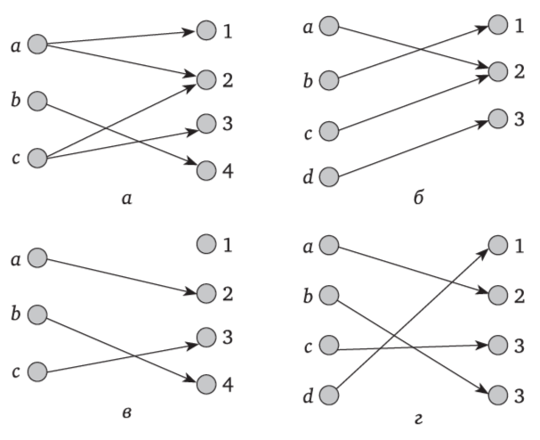
Упражнение. Придумайте пример соответствия (например, между множествами \(\mathbb R\) и \(\mathbb R\)), которое является функцией, но при этом обратное соответствие функцией не является.
Свойства бинарных отношений#
Источники: Палий - Дискретная математика и математическая логика; Haggard, Schlipf, Whitesides - Discrete mathematics for computer science
Пусть \(R \subset A \times A\) - бинарное отношение.
\(R\) называется рефлексивным, если всякий элемент множества \(A\) связан отношением с самим собой. На языке логики предикатов:
\( \forall x\in A \colon (xRx) \)
Критерий рефлексивности: \(\mathrm{id}_A \subset R\). В самом деле, данное условие означает, что если \(x = y\), то \((x, y) \in R\).
\(R\) называется симметричным, если все связи двусторонние: если \(x\) связан с \(y\), то и \(y\) связан с \(x\). В виде формулы:
\( \forall x, y\in A \colon (xRy \to yRx) \)
Критерий симметричности: \(R = R^{-1}\). Эта запись означает, что если \((x,y) \in R\), то \((x,y) \in R^{-1}\), то есть \((y, x) \in R\).
Замечание. Запишем отрицание свойства симметричности:
\( R \text{ - не симметрично} \quad \Longleftrightarrow \quad \exists x, y \in A \colon (xRy \land \neg (yRx)) \)
\(R\) называется транзитивным, если любой транзитный маршрут гарантирует существование прямого маршрута. Другими словами, если \((x, y) \in R\) и \((y, z) \in R\), то обязательно \((x, z) \in R\). На языке логики предикатов:
\( \forall x, y, z \in A\colon (xRy \land yRz \to xRz) \)
Критерий транзитивности: \(R \circ R \subset R\). Смысл этой записи в том, что если \((x, z) \in R \circ R\), то \((x, z) \in R\). С понятием суперпозиции отношений мы познакомимся чуть позже. Пока отметим, что отношение \(R \circ R\) соединяет между собой все такие пары элементов \((x, z)\), между которыми есть транзитный маршрут (через \(y \in A\)).
Упражнение. Запишите отрицание свойства транзитивности отношения \(R \subset A \times A\).
\(R\) называется антисимметричным, если двухсторонних связей нет. Это означает, что одновременное выполнение условий \((x, y) \in R\) и \((y, x) \in R\) возможно только в случае \(x = y\). Формула:
\( \forall x, y \in A \colon (xRy \land yRx \to x = y) \)
Критерий антисимметричности: \(R \cap R^{-1} \subset \mathrm{id}_A\).
Упражнение. Поясните, как вы понимаете этот критерий.
Иллюстрация свойств на графе отношения#
В каждой вершине графа рефлексивного отношения есть петля.
График рефлексивного отношения \(R \subset \mathbb R \times \mathbb R\) должен целиком содержать в себе прямую \(x = y\).
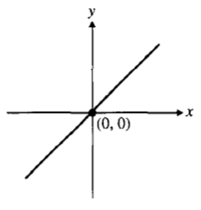
В графе симметричного отношения все стрелки двухсторонние.
График симметричного отношения \(R \subset \mathbb R \times \mathbb R\) симметричен относительно прямой \(x = y\).
Пример симметричного отношения:
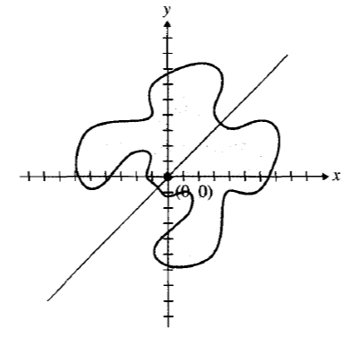
Пример не симметричного отношения:
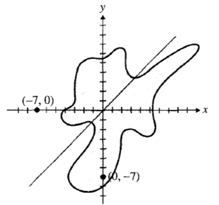
Транзитивность означает, что маршрут, проходящий через промежуточную вершину, гарантируют существование прямого маршрута.
Пример не транзитивного отношения:
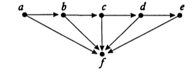
Упражнение. Докажите, что если отношение симметрично и транзитивно, то оно рефлексивно.
Иллюстрация свойств на матрице отношения#
В матрице рефлексивного отношения на главной диагонали всюду стоят единицы.
Матрица симметричного отношения симметрична (т.е. совпадает с транспонированной).
Матрица антисимметричного отношения не содержит симметричные относительно главной диагонали единицы.
Для транзитивного отношения с матрицей \(M\) выполняется свойство \(M \cdot M \leq M\). Это означает, что элементы логического умножения двух матриц \(M \cdot M\) не превосходят соответствующих элементов матрицы \(M\).
Примеры#
Отношение подобия треугольников, заданное на множестве всех треугольников евклидовой плоскости, является рефлексивным, так как каждый треугольник подобен себе самому.
Отношение перпендикулярности прямых, заданное на множестве всех прямых евклидовой плоскости, не является рефлексивным (более того, оно антирефлексивно), так как никакая прямая не перпендикулярна себе самой.
Отношение “проживать в одном доме”, заданное на множестве жителей некоторого города, симметрично. Если \(a\) живет в одном доме с \(b\), то \(b\) живет в одном доме с \(a\).
Отношение “меньше”, заданное на множестве действительных чисел, антисимметрично: если \(a < b\), то неверно, что \(b < a\).
Отношение “больше”, заданное на множестве действительных чисел, транзитивно: если \(a > b\) и \(b > c\), то \(a > c\).
Отношение “приближенно равно с точностью \(\varepsilon\)”, заданное на множестве действительных чисел (\(|x - y| < \varepsilon\)) рефлексивно, симметрично, но не транзитивно.
Отношение \(R\) на множестве людей, где \(xRy \Leftrightarrow \text{\)x\( - потомок \)y\(}\), не рефлексивно, не симметрично и транзитивно.